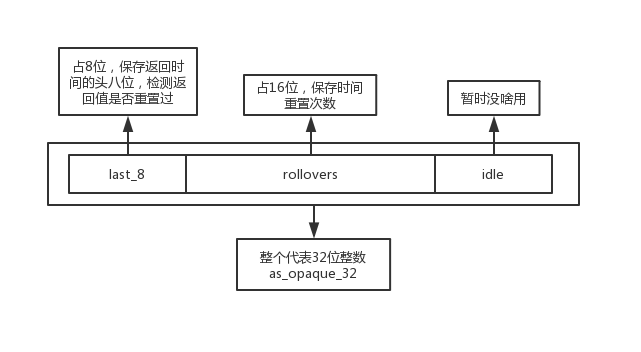

这一篇讲windows系统下TimeTicks的实现。
对于tick，V8写了相当长的一段discussion来讨论windows系统上计数的三种实现方法以及各自的优劣，注释在time.cc的572行，这里直接简单翻译一下，不贴出来了。
CPU cycle counter.(Retrieved via RDTSC)
CPU计数器拥有最高的分辨率，消耗也是最小的。然而，在一些老的CPU上会有问题；1、每个处理器独立唯一各自的tick，并且处理器之间不会同步数据。2、计数器会因为温度、功率等原因频繁变化，有些情况甚至会停止。
QueryPerformanceCounter (QPC)
QPC计数法就是之前libuv用的API，分辨率也相当的高。比起CPU计数器，优点就是不存在多处理器有多个tick，保证数据的唯一。但是在老的CPU上，也会因为BIOS、HAL而出现一些问题。
System Time
通过别的windowsAPI返回的系统时间来计数。
上一篇Clock类的构造函数中，对TimeTicks属性的初始化也只是调用了老TimeTicks的Now方法，所以直接上Now的代码。
TimeTicks InitialTimeTicksNowFunction();
using TimeTicksNowFunction = decltype(&TimeTicks::Now);
TimeTicksNowFunction g_time_ticks_now_function = &InitialTimeTicksNowFunction;
TimeTicks TimeTicks::Now() {
TimeTicks ticks(g_time_ticks_now_function());
DCHECK(!ticks.IsNull());
return ticks;
}windows系统下，会预先一个初始化方法，这里的语法不用去理解，只需要知道调用InitialTimeTicksNowFunction方法后，将其返回作为参数构造一个TimeTicks对象，返回的就是硬件时间戳。
这个方法比较简单，如下。
TimeTicks InitialTimeTicksNowFunction() {
InitializeTimeTicksNowFunctionPointer();
return g_time_ticks_now_function();
}
可以看到，那个g_time_ticks_now_function又被调用了一次，但是作为一个函数指针，第二次调用的时候指向的就不是同一个方法。至于为什么特意弄一个函数指针，后面会具体解释。
看这里的第一个方法。
void InitializeTimeTicksNowFunctionPointer() {
LARGE_INTEGER ticks_per_sec = {};
if (!QueryPerformanceFrequency(&ticks_per_sec)) ticks_per_sec.QuadPart = 0;
// 如果windows不支持QPC或者该方法不可靠 会降级去使用低分辨率的lowB方法
TimeTicksNowFunction now_function;
CPU cpu;
// QPC不好使的情况
if (ticks_per_sec.QuadPart <= 0 || !cpu.has_non_stop_time_stamp_counter() ||
IsBuggyAthlon(cpu)) {
now_function = &RolloverProtectedNow;
}
// 好使的情况
else {
now_function = &QPCNow;
}
// 这里不需要担心多线程问题 因为更改的都是同一个全局变量
g_qpc_ticks_per_second = ticks_per_sec.QuadPart;
// 先不管这个 不然讲不完
ATOMIC_THREAD_FENCE(memory_order_release);
g_time_ticks_now_function = now_function;
}从几个赋值可以看到，整个函数都是围绕着函数指针now_function的指向，其实也就是g_time_ticks_now_function，根据系统对QPC的支持，来选择不同的方法实现TimeTicks。
所以，特意用一个函数指针来控制Now方法的目的也明显了，理论上只有第一次调用会进到这个特殊函数，检测当前操作系统的QPC是否适用，然后选择对应的方法。后面再次调用的时候，就直接进入选好的方法(具体思想可以参考《JavaScript高级程序设计》高级技巧章节的惰性载入函数)。这个情况有一点像我在解析node事件轮询时提到的线程池初始化情形，不同的是，这里V8没有特意去加一个锁来防止多线程竞态。原因也很简单，因为此处只是对一个全局的函数指针做赋值，就算多赋值几次对后续的线程并没有任何影响，没有必要特意做锁。
关于QueryPerformanceFrequency方法(这些函数名都好TM长)的具体用法，可以参考我别的博客，啥都解释写不完啦。
存在两种情况的实现，先看支持QPC的，删掉了合法性检测宏，这些宏无处不在，太碍眼了。
TimeTicks QPCNow() { return TimeTicks() + QPCValueToTimeDelta(QPCNowRaw()); }
V8_INLINE uint64_t QPCNowRaw() {
LARGE_INTEGER perf_counter_now = {};
// According to the MSDN documentation for QueryPerformanceCounter(), this
// will never fail on systems that run XP or later.
// https://msdn.microsoft.com/library/windows/desktop/ms644904.aspx
// 这里说理论上XP以后的系统都支持QPC
BOOL result = ::QueryPerformanceCounter(&perf_counter_now);
return perf_counter_now.QuadPart;
}
// To avoid overflow in QPC to Microseconds calculations, since we multiply
// by kMicrosecondsPerSecond, then the QPC value should not exceed
// (2^63 - 1) / 1E6. If it exceeds that threshold, we divide then multiply.
static constexpr int64_t kQPCOverflowThreshold = INT64_C(0x8637BD05AF7);
TimeDelta QPCValueToTimeDelta(LONGLONG qpc_value) {
// 这里的if/else逻辑见上面静态变量的注释 也可以看我下面翻译的
// 理论上的计算公式是 (qpc_count * 1e6) / qpc_count_per_second 得到微秒单位的硬件时间戳
// 但是int64类型最大只能处理2^63 - 1 而这个windowsAPI返回的数字(换算乘以1e6后)可能超过这个范围
// 如果数字过大 就用先除再乘的方式计算避免溢出
// 正常情况
if (qpc_value < TimeTicks::kQPCOverflowThreshold) {
return TimeDelta::FromMicroseconds(
qpc_value * TimeTicks::kMicrosecondsPerSecond / g_qpc_ticks_per_second);
}
// 溢出情况
// 先除得到一个秒单位的时间戳
int64_t whole_seconds = qpc_value / g_qpc_ticks_per_second;
// 计算余数
int64_t leftover_ticks = qpc_value - (whole_seconds * g_qpc_ticks_per_second);
// 用整除数+余数得到最终的微秒单位时间戳
return TimeDelta::FromMicroseconds(
(whole_seconds * TimeTicks::kMicrosecondsPerSecond) +
((leftover_ticks * TimeTicks::kMicrosecondsPerSecond) /
g_qpc_ticks_per_second));
}直接看注释就好了，不过我有一些问题，先记录下来，后面对C++深入研究后再来解释。
补充
1、第一个问题我真不知道答案，在我电脑上qpc_value已经是大于那个临界值了，但是测试了一下也感觉溢出跟加减没啥区别，如下。
static constexpr int64_t kQPCOverflowThreshold = INT64_C(0x8637BD05AF7);
int main()
{
LARGE_INTEGER a,b;
QueryPerformanceCounter(&a);
QueryPerformanceFrequency(&b);
LONGLONG qpc = a.QuadPart;
INT64 qpc_per = b.QuadPart;
bool bl = qpc < kQPCOverflowThreshold;
// 0
cout << bl << endl;
// 927641572774
cout << int64_t(a.QuadPart * 1e6 / b.QuadPart) << endl;
int64_t w = qpc / qpc_per;
int64_t l = qpc - (w * qpc_per);
// 927641572774
cout << int64_t(w * 1e6 + (l * 1e6) / qpc_per) << endl;
}2、我太蠢了，那个计算是为了取余数。如果qpc、qpc_per分别是111和10，那么这个leftover算式相当于111 - (111 / 10 * 10)，得到的是余数1，然后用整除后的整数、余数分别进行换算后相加。
总之，最后还是利用了QPC的两个API得到硬件时间戳，跟libuv的套路差不多。
下面来看不支持QPC的情况，不过先过一下那个if。
CPU cpu;
if (ticks_per_sec.QuadPart <= 0 || !cpu.has_non_stop_time_stamp_counter() ||
IsBuggyAthlon(cpu)) {
now_function = &RolloverProtectedNow;有三个条件表明QPC不适用。
第一个很直白，API在当前操作系统不支持。
第二个是通过CPU判断QPC是否可靠，具体原理十分麻烦，有兴趣单独开一篇解释吧。
第三个就比较简单，有些牌子的CPU就是垃圾，直接根据内置API返回的参数判断是不是不支持的类型，如下。
bool IsBuggyAthlon(const CPU& cpu) {
// On Athlon X2 CPUs (e.g. model 15) QueryPerformanceCounter is unreliable.
return strcmp(cpu.vendor(), "AuthenticAMD") == 0 && cpu.family() == 15;
}
正式进入QPC不支持分支。
union LastTimeAndRolloversState {
// 完整的32位时间
int32_t as_opaque_32;
struct {
// 时间头8位
uint8_t last_8;
// 时间重置次数
uint16_t rollovers;
} as_values;
};
TimeTicks RolloverProtectedNow() {
// 见上面的解释
LastTimeAndRolloversState state;
DWORD now; // DWORD is always unsigned 32 bits.
// 这是一个原子操作数 线程安全
int32_t original = g_last_time_and_rollovers.load(std::memory_order_acquire);
while (true) {
// 类型为int32位整数
state.as_opaque_32 = original;
// 定义如下 实际上就是windowsAPI的timeGetTime
// DWORD timeGetTimeWrapper() { return timeGetTime(); }
// DWORD (*g_tick_function)(void) = &timeGetTimeWrapper;
now = g_tick_function();
// 移位后只获取头8位
uint8_t now_8 = static_cast<uint8_t>(now >> 24);
// 当头8位的时间比保存的要小时 说明返回值重置了
if (now_8 < state.as_values.last_8) ++state.as_values.rollovers;
state.as_values.last_8 = now_8;
// 当两次相同时 代表当前的值是稳定可信的 直接返回
if (state.as_opaque_32 == original) break;
if (g_last_time_and_rollovers.compare_exchange_weak(
original, state.as_opaque_32, std::memory_order_acq_rel)) {
break;
}
}
// 返回次数 * 2^32 加上 当前时间
return TimeTicks() +
TimeDelta::FromMilliseconds(
now + (static_cast<uint64_t>(state.as_values.rollovers) << 32));
}这块的内容相当多，首先需要解释一下上面的核心方法timeGetTime，官网的解释如下。
The timeGetTime function retrieves the system time, in milliseconds. The system time is the time elapsed since Windows was started.(检测系统启动后所经过的毫秒数)
The return value wraps around to 0 every 2^32 milliseconds, which is about 49.71 days.(返回值会从0一直涨到2^32，然后又从0开始无限循环)
上面的第二段表明了为什么要用那么复杂的处理，因为这个返回值不是无限变大，而是会重置为0。而且union这个东西也很有意思，JS里面找不到对比的数据类型，类似于struct结构体，但不同点是内存共用。拿源码中的union举例子，内存结构如下所示。

整个过程大概是这样的。
最后返回值的计算也很简单了，就是重置次数rollovers乘以重置一次的时间2^32，加上当前获取的now，得到总的硬件时间戳。
完事了。